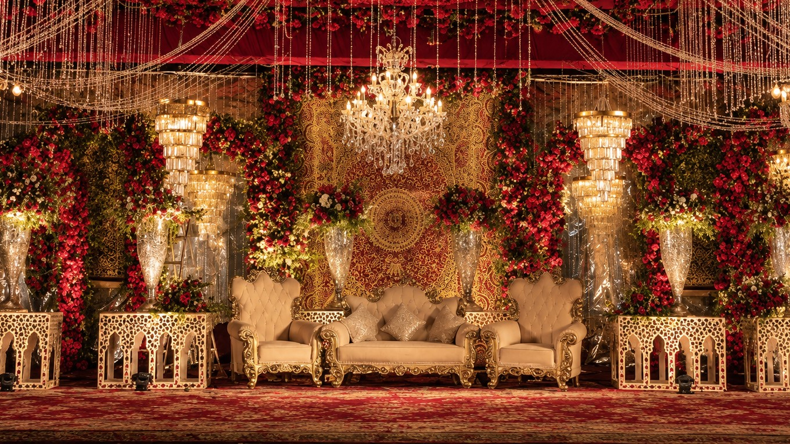
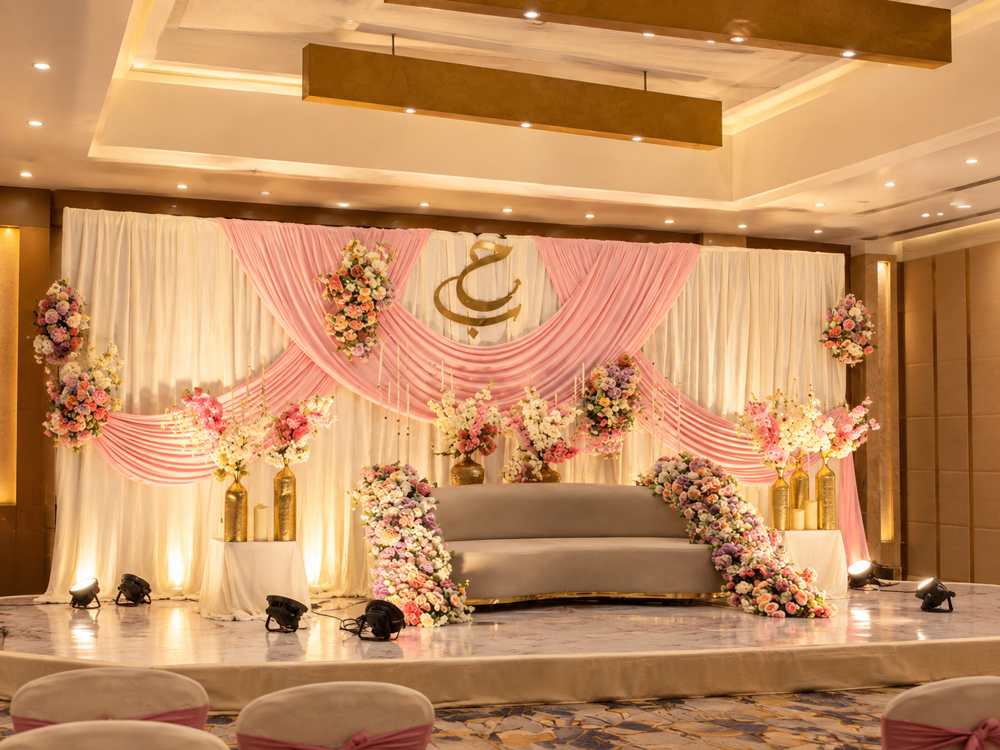

Wedding & Event Decoration Services in Indore
“Every celebration is an intimate masterpiece. We orchestrate architectural stages, delicate florals, and romantic lighting into unforgettable memories.”

Nikah Décor
The Nikah is the sanctified heart of an Islamic wedding. Our signature setup pairs royal white Islamic geometric jaali arches with an opulent canopy of avalanche white and baby-pink roses, accompanied by a dramatic, floor-length cascading curtain of fragrant hand-strung mogra and jasmine.
- White Islamic geometric jaali arches and open-air ceremonial pavilion
- Cascading ceiling-to-floor fragrant mogra & jasmine floral veil
- Traditional upholstered chowki diwans set over an authentic Persian carpet
- Spherical floral totems & antique Moroccan etched gold urn accents

Custom Nikah Backdrops
Our bespoke backdrops serve as the iconic visual signature of your celebration. Our signature architectural backdrop features a floor-to-ceiling living botanical wall of dense white roses and lush emerald greenery with concealed warm backlighting, crowned by a breathtaking suspended ceiling of cascading white wisteria and multi-tiered crystal chandeliers.
- Floor-to-ceiling dense white rose & foliage botanical wall with warm backlight
- Overhead suspended canopy of cascading white wisteria floral stalactites
- Multi-tiered crystal raindrop chandeliers & contrasting black-iron centerpiece
- Slender glowing golden lotus candle stands & tufted ivory chesterfield seating

Floral Arrangements
Florals are the living pulse of every ceremony. Our master floral installations feature monumental three-dimensional botanical flower walls in delicate ombré gradients of baby pink, peach, and ivory, seamlessly integrated with laser-cut gold mirrored filigree panels and grand crystal chandeliers encircled by fresh floral wreaths.
- Three-dimensional botanical flower wall in baby pink, peach, and ivory ombré
- Gold laser-cut geometric mirrored filigree panels woven into floral textures
- Grand tiered crystal chandeliers draped in fresh floral garland rings
- Sculptural curved ivory velvet lounge seating with warm ambient floor lamps

Stage Decoration
The grand focal centerpiece where cherished portraits and memories are made. Our signature stage architecture features a monumental triple-arch botanical structure draped in avalanche white roses, framing an authentic heritage Persian tapestry hung in the central alcove beneath a glittering sky of cascading crystal chandeliers.
- Monumental triple-arch floral architecture woven with avalanche white roses
- Central alcove framed with an authentic antique Persian woven tapestry
- Overhead canopy of dripping crystal strands & multi-tiered crystal chandeliers
- Ornate hand-carved gold-leaf rococo royal sofa suite with tufted ivory velvet

Lighting Design
Lighting transforms space into pure emotion. Our architectural lighting installations feature grand concentric illuminated gold halo rings filled with dense white blossoms, symmetrical vertical golden louvre light panels, suspended halo chandeliers with wisteria, and an illuminated grand aisle designed for cinema-grade evening photography.
- Concentric illuminated gold circular ring arches filled with white flowers
- Vertical backlit gold louvre light panels & illuminated floral columns
- Suspended circular gold halo rings with hanging crystal chandeliers
- Raised illuminated central entry runway & sculptural luminous tensile accents

Home Wedding Décor
For families celebrating intimate ceremonies at home or boutique venues in Indore, we create cozy yet ultra-luxurious atmospheres. Our signature intimate setup features sweeping crossed baby-pink and ivory fabric swags, an upholstered love seat with dramatic waterfall floral cascades flowing from the armrests to the floor, vintage consoles, and candelabra candlelight.
- Sweeping crossed baby-pink & pleated ivory fabric drapery swags
- Loveseat featuring dramatic waterfall floral cascades tumbling to the floor
- Vintage French console tables with antique gold Moroccan punched-metal urns
- Multi-tiered brass candelabras with ivory taper candles & Persian medallion rug

Grand Wedding Décor
Engineered for luxury resort ballrooms and expansive wedding lawns in Indore, our grand wedding setups showcase majestic royal aesthetics. Our signature royal crimson styling features scalloped arches of deep red roses, a central gold-embroidered heritage tapestry, multi-tiered cylindrical crystal chandeliers, and hand-carved gilded royal throne seating.
- Scalloped royal arches crafted with thousands of deep crimson & red roses
- Central gold-embroidered heritage tapestry backdrop panel & crystal swags
- Grand tiered crystal chandeliers & cylindrical gold-trimmed chandelier columns
- Hand-carved gilded royal throne armchairs on an expansive red Persian carpet

Custom Event Styling
Every bespoke celebration is personalized with artistic nuance. Our signature event styling combines an ivory pleated backdrop with sweeping baby-pink swag drapes framing a custom gold Arabic/Urdu couple monogram, a modern curved crescent settee with overflowing pastel floral runners, and illuminated hammered gold vases over a glossy marble stage.
- Custom gold-finish Arabic/Urdu couple calligraphy monogram emblem
- Sweeping baby-pink swag drapery over a pleated ivory backdrop
- Curved crescent lounge settee flanked by cascading pastel floral runners
- Illuminated hammered gold vases, cherry blossoms, and glossy marble staging
Have a specific concept in mind?
We love tailoring one-of-a-kind themes. Share your moodboards, color ideas, or venue details with Azhar Kazi.
Schedule a Consultation